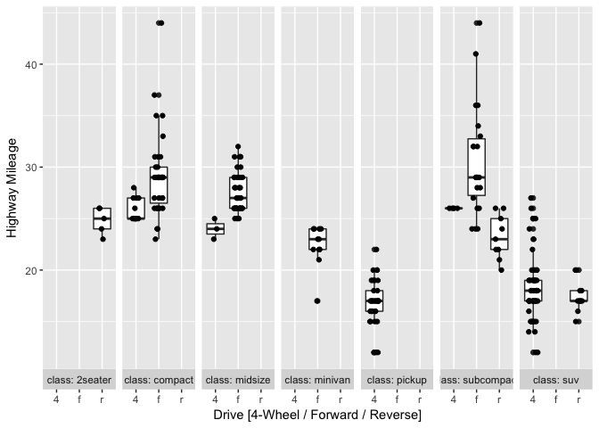

Notes: Variability Charts in R (similar to those in JMP)
Variability Gauge Charts, (example from JMP website), are very useful to quickly compare the influence of multiple factor variables on a process. Those are one of the staple graphs for semiconductor engineers.
Below is an attempt at creating a basic Variability Chart in R using ggplot2 package. For simplicity, I have expanded the ggplot command into multiple sub-commands.
require(ggplot2)
data(mpg)
# create a plot with Y and the first category variable.
p <- ggplot(mpg,aes(drv,hwy))
# add the box plots
p <- p + geom_boxplot()
# apply the second category variable.
# choose nrow = 1 so that, we see all the plots in one row.
p <- p + facet_wrap(~class, nrow = 1 , strip.position = "bottom" , labeller = "label_both" )
# add jitter to the points so that they are all not clustered together.
p <- p + geom_jitter(width=.2, height=0)
# Change axis labels etc.
p <- p + labs(y = "Highway Mileage", x = "Drive [4-Wheel / Forward / Reverse]")
# display the plot
p

Tags: Notes